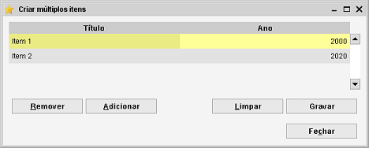

Este resumo é usado para criar múltiplos itens rapidamente. Algumas ferramentas usam este resumo para armazenar os resultados
de uma importação (por exemplo). Os itens mostrados neste resumo ainda não estão gravados.
Adicionalmente, pode adicionar manualmente novos itens aqui.

A tabela
A tabela é onde os itens são mostrados e onde os pode editar.
Editar um valor na tabela é simples. Clique na célula e pode introduzir texto (para campos de texto),
números (para campos numéricos) ou selecionar um valor da lista. Em campos de texto também pode mudar
para o modo de edição premindo F2. Uma vez satisfeito, certifique-se que grava os itens que editou, clicando
em Gravar.